There are a range of financial information you can view and things you can do on the Accounts page in Meddbase. This article provides an overview of:
To access the Accounts section:
1. Go to the Start page in Meddbase.
2. Select the Accounts tile.
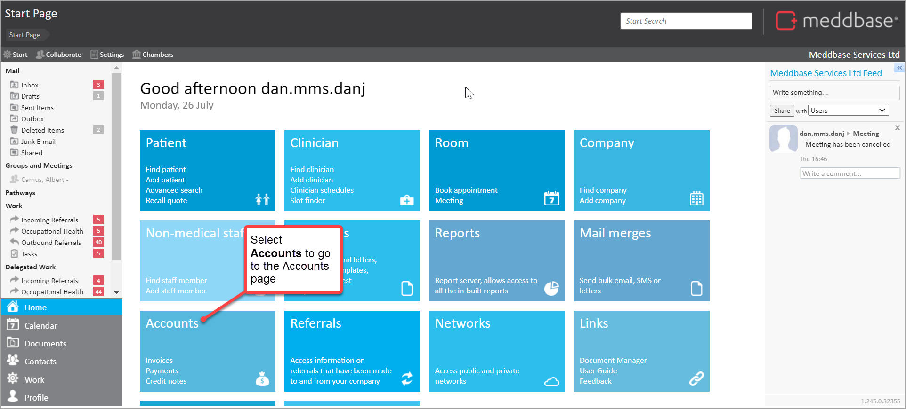
By doing so, you are taken to the Accounts page, with the Invoices section displayed by default.
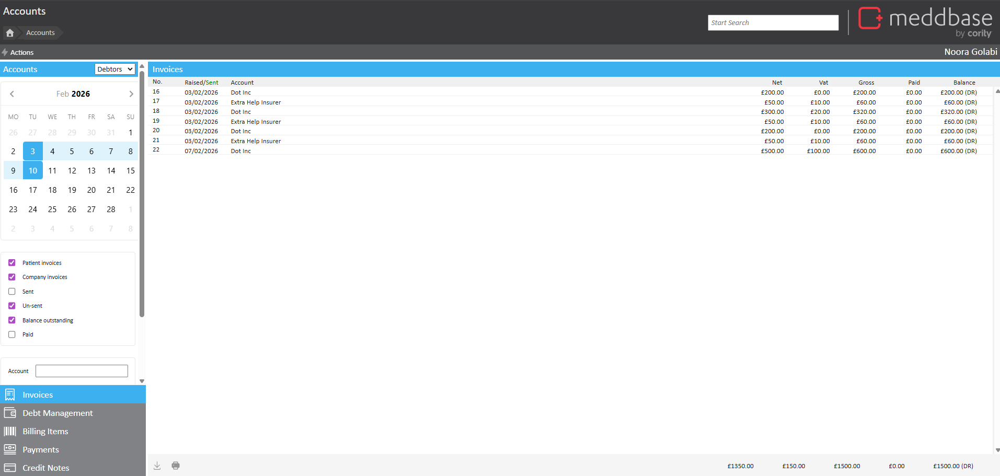
There are some top-level navigation features available on the Accounts page to enable you to move between sections.
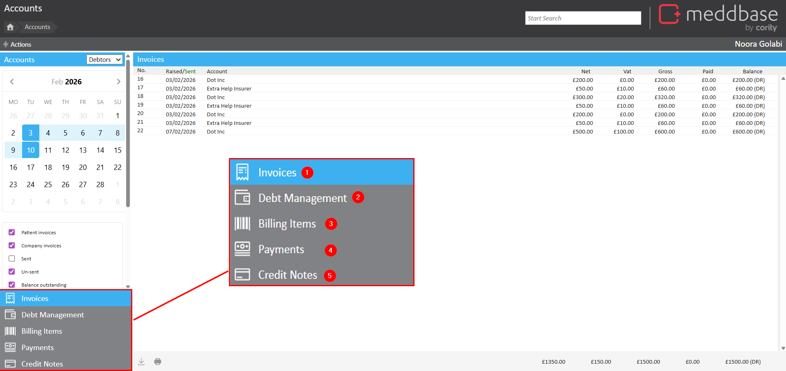
These are annotated in the picture above and explained in the table below.
| Item | What the feature is |
| 1 | Invoices enables you to view and perform actions with invoices. |
| 2 | Debt management enables you to view and manage invoices with an outstanding balance. It also displays their age. |
| 3 | Billing Items enables you to find, view and manage individual billing items. This includes their related invoice, date, patient, attendees, service and amounts. |
| 4 | Payments enables you to find, view and manage payments that have been made to your account. |
| 5 | Credit Notes enables you find and view credit notes that have been raised. |
In the Invoices section, you can use a range of selection criteria available to change the display to find specific invoices.
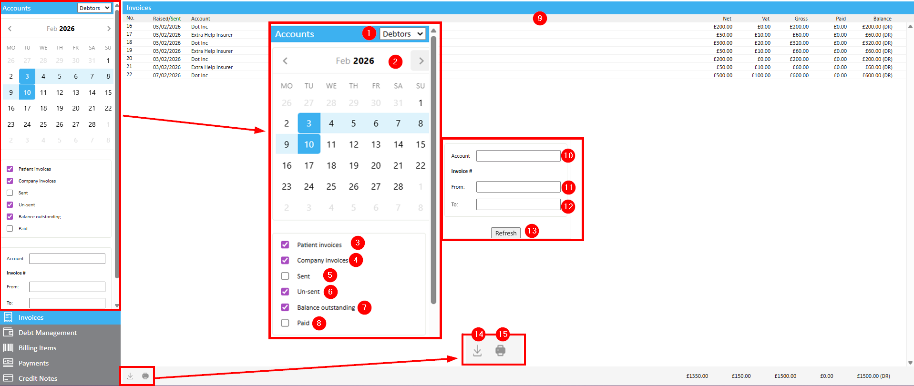
These features are annotated in the picture above are explained in the table below.
| Item | What it is and how it's important |
| 1 | A drop-down that enables you to switch between Debtors and Creditors for a list. For invoices, this would typically be set to Debtors. |
| 2 | A calendar that enables you to navigate through months and select a date in a month to define a date raised from value and a date raised to value. |
| 3 | A tick box that enables you to display or hide Patient invoices on the Invoices display. |
| 4 | A tick box that enables you to display or hide Company invoices on the Invoices display. |
| 5 | A tick box that enables you to display or hide Sent Invoices on the Invoices display. Where an invoice has been sent, you can make payments and raise credit notes. However, billing items cannot be modified. All invoices sent to Healthcode or Xero will appear here when selected. |
| 6 | A tick box that enables you to display or hide Un-sent Invoices on the Invoices display. Where an invoice has been generated but not sent, you can add, remove and change the price of every billing item. |
| 7 | A tick box that enables you to display or hide invoices with a Balance Outstanding. You'll need to remember to tick other relevant check-boxes for this to work. For example, an Unsent invoice will typically have a balance outstanding, unless billing items are removed or changed to 0.00. So if Balance Outstanding is ticked but Unsent invoices is not ticked, no unsent invoices will be displayed. |
| 8 | A tick box that enables you to display either fully or partially Paid invoices. It is worth noting that an Unsent invoice cannot be paid. |
| 9 | A table displaying the Invoice records. Each record displays an Invoice No., date it was Raised/Sent, the Account, the Net amount, Vat amount, Gross amount, Paid amount and Balance. By clicking on record you can view more detail for that particular invoice. |
| 10 | By clicking on the field you open an Account search to allow you to search for a specific debtor (patient or company). |
| 11 | Allows you to input a From invoice number when looking for invoices in a numbered range. Effectively, this is allowing you to find invoices with a number greater than or equal to the value recorded. |
| 12 | Allows you to input a To invoice number when looking for invoices in a numbered range. Effectively, this is allowing you to find invoices with a number less than or equal to the value recorded. |
| 13 | A Refresh button that needs to be selected each time new filters or selection criteria are applied. |
| 14 | An export feature enabling you to download the Invoice list to a csv file. |
| 15 | An option to Print all visible company or patient invoices using the same template. |
You can open an invoice from within the Invoices section to review the detail it contains. To do this:
The individual invoice is presented on screen.
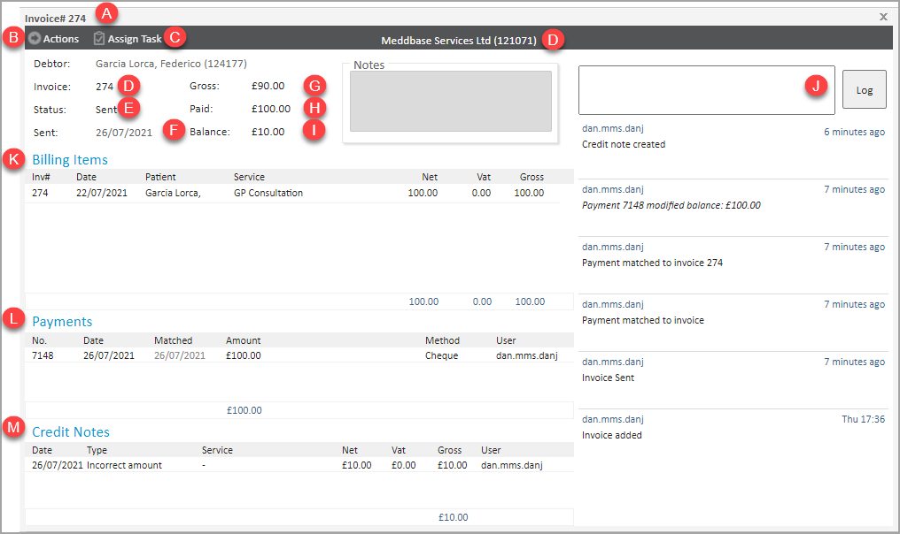
This invoice itself has a range of characteristics which are annotated in the diagram above and explained in the table below.
| Item | What it is |
| A | The title bar including the number of the invoice. |
| B | The Actions button that allows you to carry out different tasks such as making payments, raising credit notes, email invoice and match payments. Please see the section below for more information on those actions. |
| C | The Assign Task button allows you to assign tasks to roles or users. |
| D | The Invoice number |
| E | The Status of the invoice. For example Sent or Not sent. |
| F | The Date that the invoice was sent or raised. |
| G | The Gross amount of the invoice. |
| H | The Paid amount of the invoice. |
| I | The Balance to be paid on the invoice. |
| J | The Activity log enables you to view and add comments to an invoice. |
| K | The Billing Items table shows you component billing items that make up the invoice. For each billing item, you can view the Date, Patient, Description, Net amount, VAT amount and Gross amount. Where the Invoice to which the Billing Item belongs is Not Sent you can edit the billing. |
| L | The Payments table shows you component payments items recorded against the invoice. For each payment you can view the No., Date, Matched date, Amount of payment and Method of payment. Negative payments (refunds) are in red. |
| M | The Credit Notes table shows you component credit notes items recorded in relation to the invoice. For each credit note record you can view the Date, Type, description, Net amount, VAT amount and Gross amount. |
In the Debt Management section, you can use a range of features to display, navigate and sort debt records. You can also print unsent debt letters and mark them as sent.
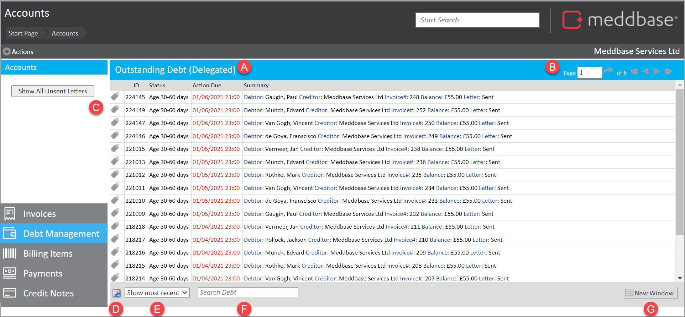
These features are annotated in the picture above are explained in the table below.
| Item | What it is |
| A | A table displaying the Outstanding Debt records. Each record displays an ID, Status, Action Due date and Summary. The summary in turn shows the Creditor, Debtor, Invoice No. and Balance. By clicking on record you can view more detail for that particular record. |
| B | Navigation features to move between pages of the Outstanding Debt list. |
| C | An option that enables you to view Unsent Debt letters. When displayed you can use this feature to print and mark debt letters as sent. |
| D | An export feature enabling you to download the Outstanding Debt list to a csv file. |
| E | A Sort feature allowing you to order Outstanding Debt list items by either most recent or next due date. |
| F | A Search feature allowing you to use criteria such as invoice number, debtor name or balance. |
| G | Enables you to open Outstanding Debt in its own browser tab. |
In the Billing Items section, you can use a range of selection criteria features to change the display to find specific billing items related to invoices. It's also possible to export billing items and edit billing items that have not been sent.
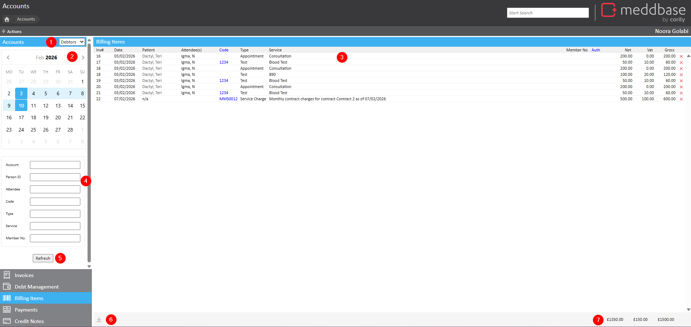
These features are annotated in the picture above are explained in the table below.
| Item | What it is and how it's important |
| 1 | A toggle view that enables you to switch between Debtors and Creditors for a list. For billing items, this would typically be set to Debtors. |
| 2 | A calendar that enables you to navigate through months and select a date in a month to define a date raised from value and date raised to value. |
| 3 | A table listing billing items. For each item you can view the related Invoice Number, the Date, the Patient, the Attendee(s), Service Code, Type, Service, Membership No., Authorisation, and Amounts. Where a billing item relates to an invoice that is Not Sent, you can make edits to it. |
| 4 | A range of selection criteria (Account, Person Id, Attendee, Code, Type, Service and Member No.) that enable you to filter the Billing Items list to specific records. |
| 5 | A Refresh button that needs to be selected each time new filters or selection criteria are applied. |
| 6 | An export feature enabling you to download the Billing Item list to a csv file. |
| 7 | A summary showing the total Net amount, total VAT amount and total Gross amount for the Billing Items included in the selection. |
In the Payments section, you are shown payments received to your account. You can use a range of selection features to change the display to find specific payments.
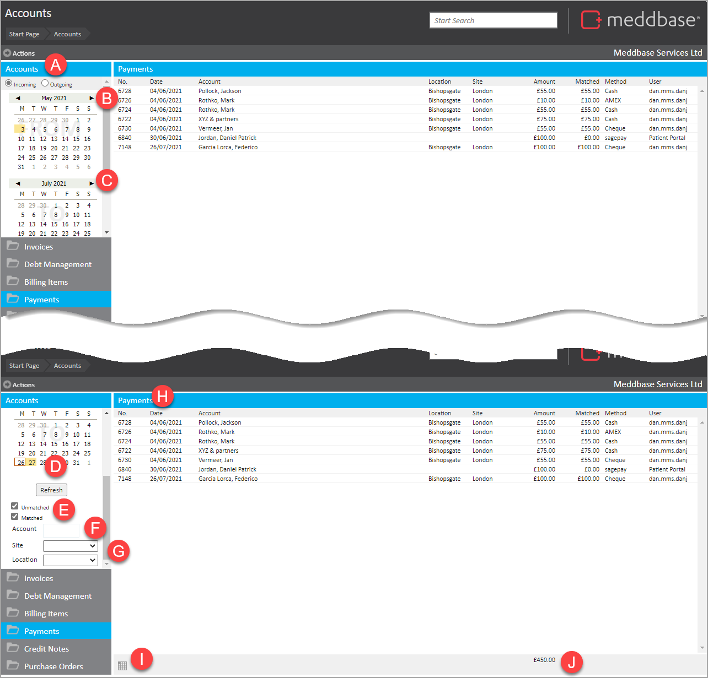
These features are annotated in the picture above are explained in the table below.
| Item | What it is and how it's important |
| A | A toggle view that enables you to switch between Incoming and Outgoing payments for a list. This would typically be set to Incoming. |
| B | A calendar that enables you to navigate through months and select a date in a month to define a date from value. |
| C | A calendar that enables you to navigate through months and select a date in a month to define a date to value. |
| D | A Refresh button that needs to be selected each time new filters or selection criteria are applied. |
| E | Tick boxes that enable you to include Unmatched or (fully matched) Matched items in the Payments list. |
| F | By clicking on the field you open an Account search to allow you to search for a specific payer (patient or company). |
| G | Selection options that enable you to select payments in relation to a particular Site or Location |
| H | A table listing payments. For each item, you can view the related Date, Account, Location, Site, Amount, Matched amount and payment method. By double-clicking on a row, it is possible to view the detail for the payment and take further action. For example, unmatched payments can be matched. |
| I | An export feature enabling you to download the Payment list to a csv file. |
| H | A summary showing the total amount, total amount for the payments included in the selection. |
In the Credit Notes section, you are shown payments received to your account. You can use date range selection features to find specific credit notes.
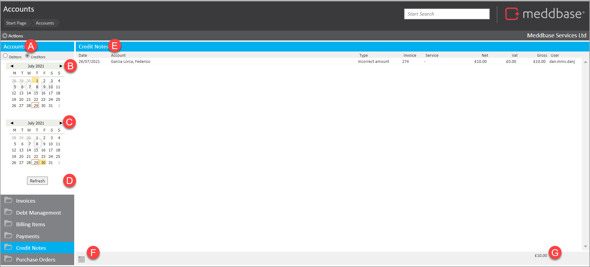
These features are annotated in the picture above are explained in the table below.
| Item | What it is and how it's important |
| A | A toggle view that enables you to switch between Debtors and Creditors for a list. For Credit Notes, this should be set to Creditors. |
| B | A calendar that enables you to navigate through months and select a date in a month to define a date raised from value. |
| C | A calendar that enables you to navigate through months and select a date in a month to define a date raised to value. |
| D | A Refresh button that needs to be selected each time new selection criteria are applied. |
| E | A table listing Credit Notes. For each item you can view the Date, Account, Type, related Invoice Number, Net Amount, VAT amount, Gross amount and the User who processed the credit note. |
| F | An export feature enabling you to download the Credit Note list to a csv file. |
| G | A summary figure of the total Gross amount for the Credit Notes included in the selection. |
In the Purchase Orders section, you are shown purchases. You can use selection features to find specific purchase orders.
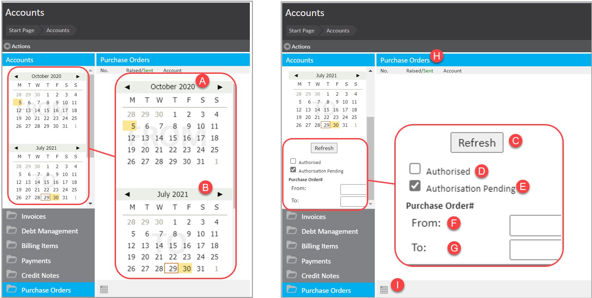
These features are annotated in the picture above are explained in the table below.
| Item | What it is and how it's important |
| A | A calendar that enables you to navigate through months and select a date in a month to define a date from value. |
| B | A calendar that enables you to navigate through months and select a date in a month to define a date raised to value. |
| C | A Refresh button that needs to be selected each time new selection criteria are applied. |
| D | A tick box that enables you to view Authorised purchase orders. |
| E | A tick box that enables you to view purchase orders with there is Authorisation Pending |
| F | Enables you to input a From number for Purchase Orders in a numbered range. Effectively, this is allowing you to find purchase orders with a number greater than or equal to the value recorded. |
| G | Enables you to input a To number for Purchase Orders in a numbered range. Effectively, this is allowing you to find purchase orders with a number less than or equal to the value recorded. |
| H | A table listing Purchase Orders. For each item you can view the Number, whether it has been Raised/Sent, the related Billing Company, the Net amount, VAT amount, Gross amount, Paid amount and Balance. |
| I | An export feature enabling you to download the Purchase Order list to a csv file. |
As well as viewing information and using selection criteria in the different sections, you can carry out specific actions. Some of these actions can be carried out across the different sections of the Accounts page. A more extensive range of actions are available for specific invoices.
Within each section, you have an Actions menu.
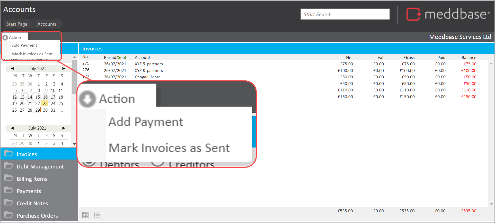
These features are identified in the picture above are explained in the table below.
| Menu option | What it does |
| Add Payment | Enables you to record a payment from a company, payment or other sources. Please see the article Making advance payments for more detail on the steps. |
| Mark Invoices as Sent | Enables you to mark invoices as sent. Please see the article Marking invoices as sent in bulk for more details on the steps |
Having clicked on an Invoice in the Invoices section, there are a range of further actions you can take. The options available can depend on previous actions taken with the invoice, such as whether it has been marked as sent or a payment has been received for it.
For an unsent invoice, the menu appears as shown in the picture below
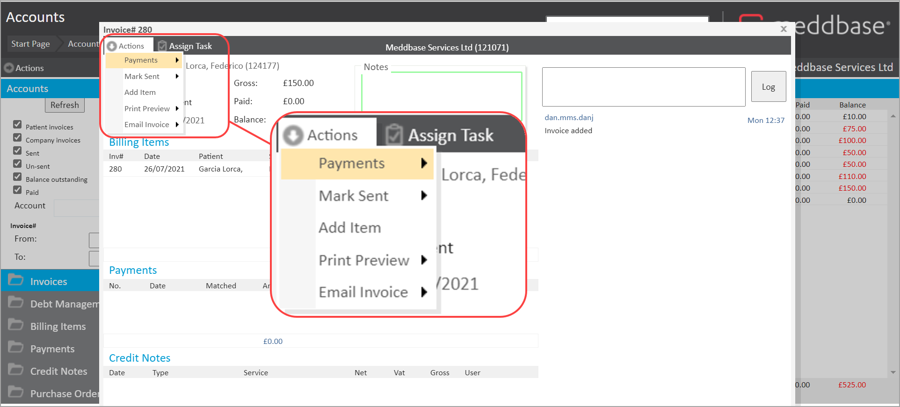
These features are identified in the picture above are explained in the table below.
| Menu option | What it does |
| Action > Payments > Make Payment | Enables you to make a payment for the invoice. Please see the article Add a payment to an invoice for more information. |
| Actions > Mark Sent | Enables you to record the sending of an invoice using today's date or any other date. Please see the article Sending an invoice for more information. |
| Actions > Add Item | Enables you add a further billing item to the Invoice. |
| Actions > Print Preview | Enables you to generate a pdf with your invoice and print it. |
| Actions > Email Invoice | Enables you to send the invoice as an email attachment to a patient or company Please see the article Emailing an invoice for more information. |
| Assign Task | Enables you to create and assign a task in relation to the invoice. Please see the article Tasks for more information about what you can do with tasks. |
For a sent invoice, the menu appears as shown in the picture below
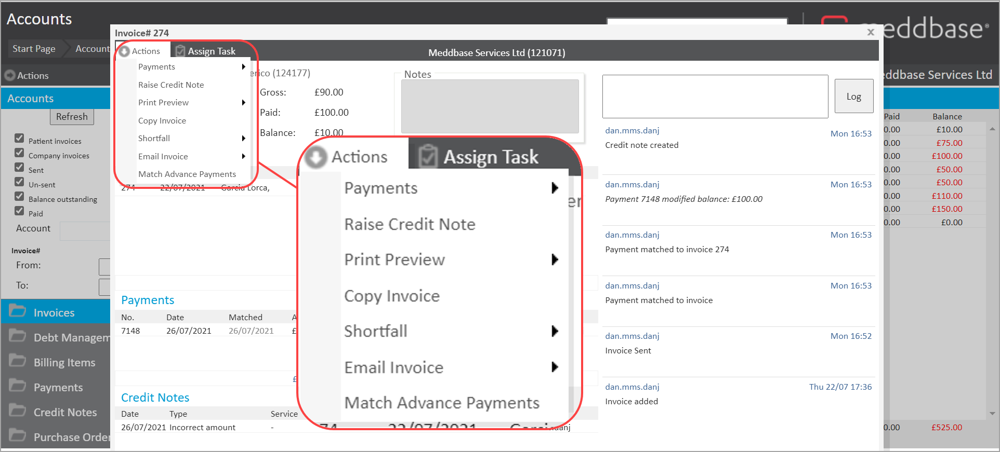
The additional features not shown in the Unsent invoices table above are explained in the table below
| Menu option | What it does |
| Actions > Raise Credit Note | Enables you to raise a credit note for the invoice including the definition of the Credit Note type and amount. Where a refund is required, after raising a credit note, please remember to make a negative payment (refund), by clicking on Actions/Make Payment. The system will prepare a negative amount for you automatically. A positive credit note decreases the value of an invoice. Please see the article Correcting Invoices for more information on steps. |
| Actions > Copy Invoice | By using this option the system will create a new, un-sent one for you with the same billing items and no payments/credit notes recorded. |
| Actions > Shortfall | Enables you to shortfall a patient or company for the remaining balance of the invoice. Please see the article Shortfall payments for more information. |
| Actions > Match Advance Payments | Enables you to match advanced payments taken from a patient or company. |